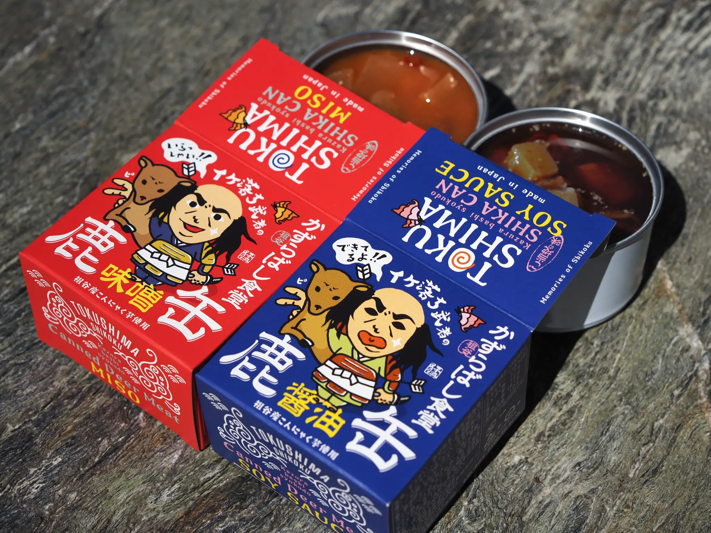
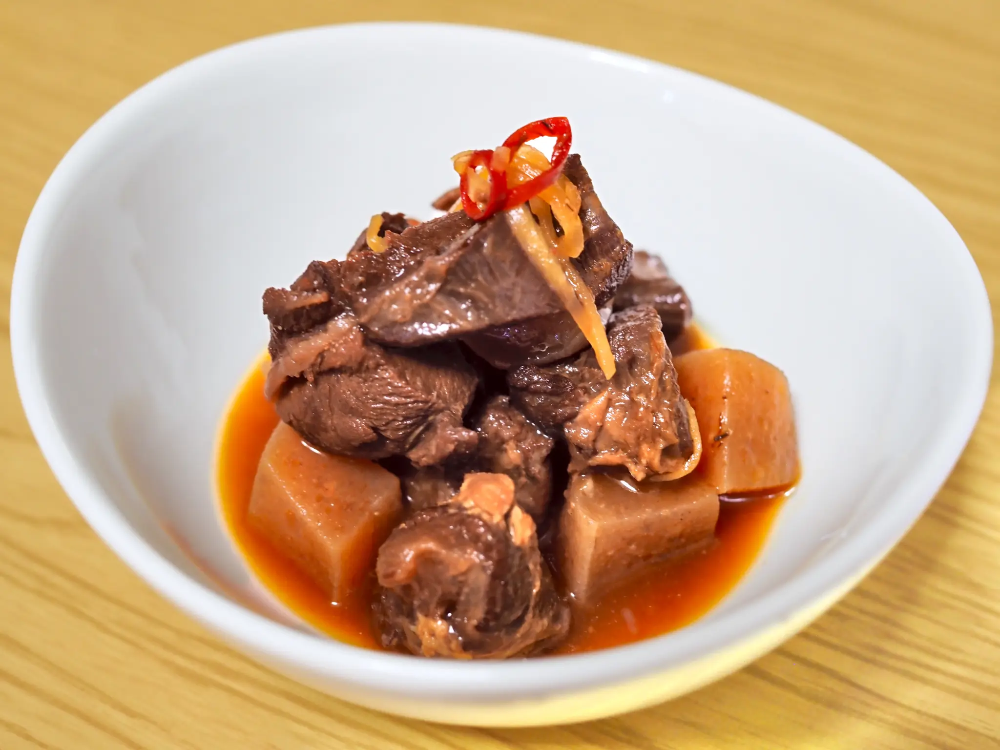

いただきますという精神

日本の原風景が残る、徳島県の祖谷。山々と寄り添い、その豊かな恵みを日々の暮らしに取り入れてきた人々の心には、自然への畏敬の念が根付いています。増えすぎた野生の鹿とどう向き合うか。彼らが出した答えは、その命を無駄にせず、美味しい「山の恵み」として最後まで大切にいただき切ることでした。いただきますという言葉には命を受け取るという意味があります。野生動物もまた尊い命であるという深い敬意が、ジビエという特別な食材を、日常で手軽に味わえる一缶へと生まれ変わらせました。
ただいただくだけでない。美味しくいただく
命をいただくからには、最高に美味しい状態で届けたい。その想いは妥協のない手仕事に表れています。厳格な品質管理をクリアした鹿肉だけを選び、機械では対応できない繊細な筋引きや絶妙な火入れを、自らの手で丁寧におこないます。部位ごとの肉の繊維を見極めて切り出し、何度も試作を重ねてたどり着いた親しみやすい味付け。高級食材とされがちなジビエの枠を超え、驚くほど柔らかく、豊かな味わいに仕上げられています。
祖谷に住む人間のクラフトマンシップ

そのまま酒の肴にしたり、キャンプ飯に加えたりと、楽しみ方は自由自在。国境や文化を越え、誰もが美味しく食べられるヘルシーな鹿缶は、他にはないオンリーワンのものを作り上げるという職人の情熱の結晶。この小さな缶詰には、祖谷の大自然への愛と、手仕事を楽しむ人々の誇りが確かに宿っています。